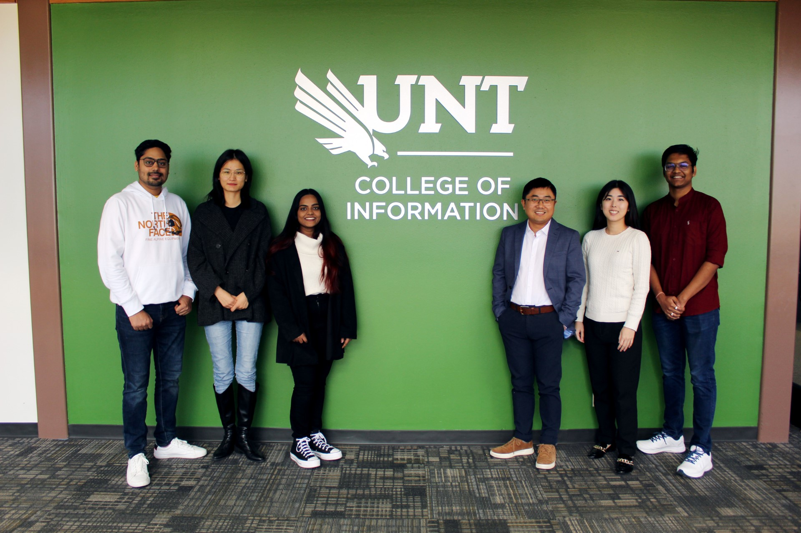
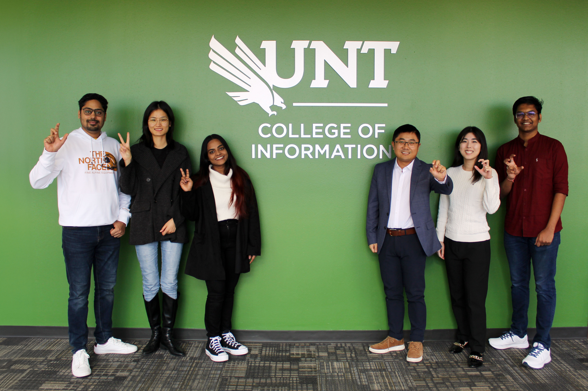

The Intelligent Information Access and Analytics (IIAA) Lab at UNT is a group of researchers working on exploring effective and efficient methods for access, interaction, and analysis of large, distributed, heterogeneous, and multimedia information, with the goal of building high-performance and reliable intelligent systems. Our research spans across machine learning, natural language processing, text mining, and information retrieval, with a focus on data quality and model testing for data-centric AI systems. We are excited about both developing computational models and building real-world applications for important domains such as healthcare, legal intelligence, cyber security, scientific communication, and others. The IIAA is led by Dr. Haihua Chen and is also a part of Department of Information Science, College of Information at UNT. [Previous].